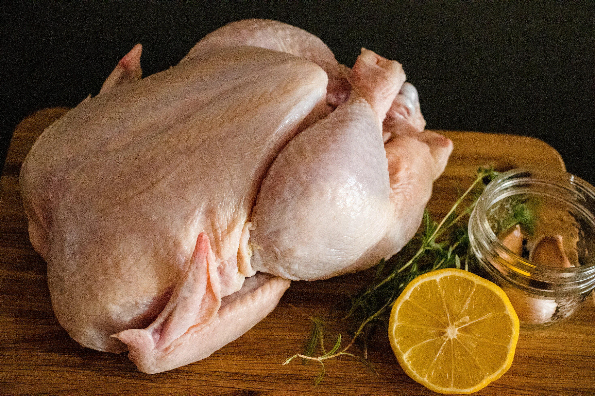
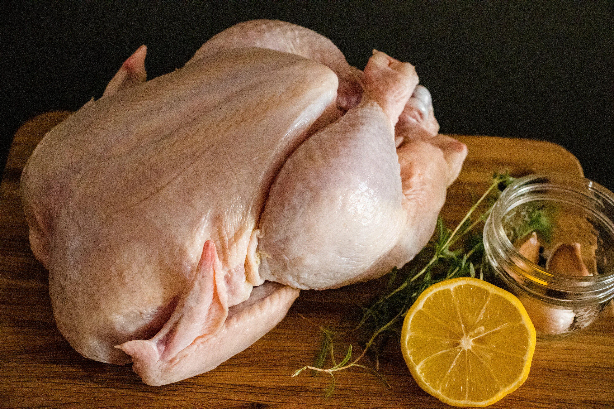
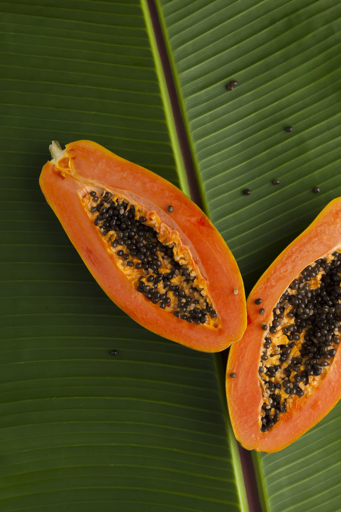
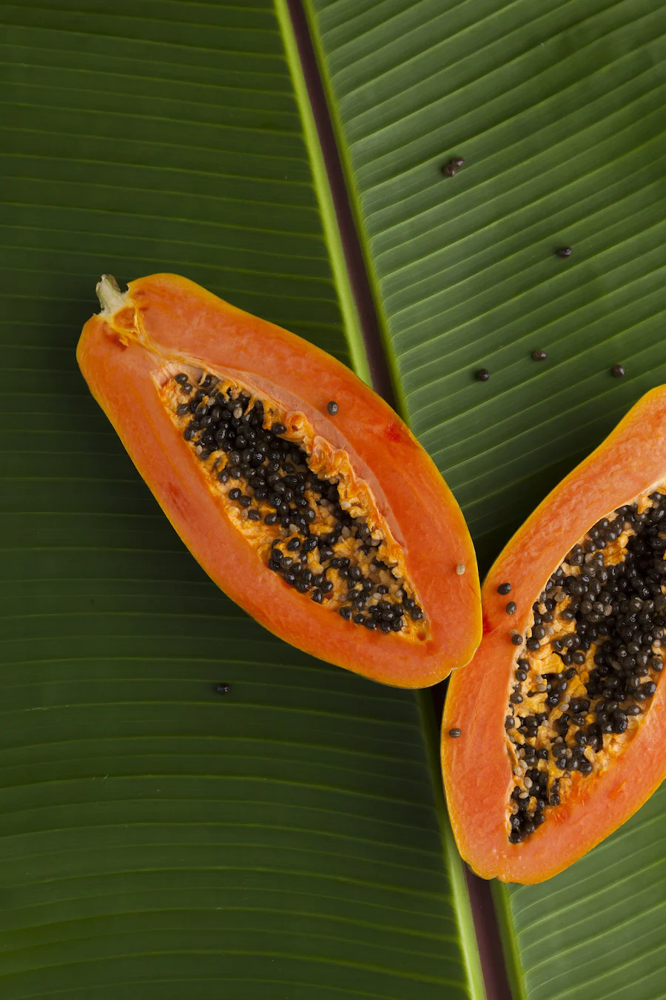

CLASSES OF FOOD
Protein
A protein is a naturally occurring, extremely complex substance that consists of amino acid residues joined by peptide bonds.
- Eggs
- Beans
- Chicken
- Fish
- Whey
 


Vitamin
Vitamins are organic substances that are generally classified as either fat soluble or water soluble.
- Broccoli
- Papaya
- Melon
- Papaya
- Peaches
 

Minerals
Minerals are found in foods like cereals, bread, meat, fish, milk, dairy, nuts, fruit (especially dried fruit) and vegetables.
- nuts
- A nut is a fruit consisting of a hard or tough nutshell protecting a knerel which is usually edible
- fruits
- Helps in building the immune system
- vegetables
- Strengthens the body system